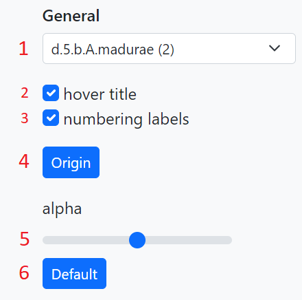
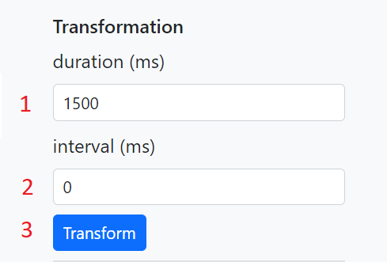

This is demonstration of a Typescript library for visualizing multiple RNA secondary structures using template-based generation of radial diagram for comparing structures between each other by mapping diagrams via template diagram.
Canvas is displaying structures as a radial diagrams. You can zoom or pan canvas as you wish and in some situations by clicking on a nucleotide of a template structure or near it on the canvas all structures that has nucleotide that is mapped to the template nucleotide are aligned to that nucleotide.

In alignment groups segment you can align structures by clicking on one of the buttons. Each button has number that represents potential number of aligned nucleotides so button with bigger number could align more nucleotides than button with smaller number but it’s not a rule.
Transformation segment can be used for animated transformation of structures to and from template structure. It is divided into two parts. First part is hiding nucleotides which are not mapped to any template nucleotide. Second part is moving all other nucleotides to the position of their template nucleotides. 1. Duration of the animations second part in miliseconds 2. Delay between hiding each nucleotide in the animations first part. 3. Starts animated transformation.


Changes content of control panel. Navigation panel has four options - Alignment, Layers, Transformation and Combination. Alignment, Layers and Transformation isolates some methods for visualizing and comparing RNA secondary structures. The fourth option, Combination, is for working with all methods at once to explore the full potentional of the library.
On the control panel you can always find general segment where you for example switch between set of structures. Besides general segment control panel always contains switch to turn on/off mapping lines for each structure at structures segment.
Alignment option is focusing on a alignment of structure diagrams. On the control panel is available alignment groups segment where you can choose to which group of nucleotides will be the structures aligned. You can also align on a specific nucleotide by clicking on a canvas.
For this option is additionaly available in structures segment checkboxes for showing/hiding specific structures in a given set of structures.
Transformation option gives you transformation segment which is used for animated transformation of structures to template structure. You can also turn on/off transformation for specific structures in structure segment